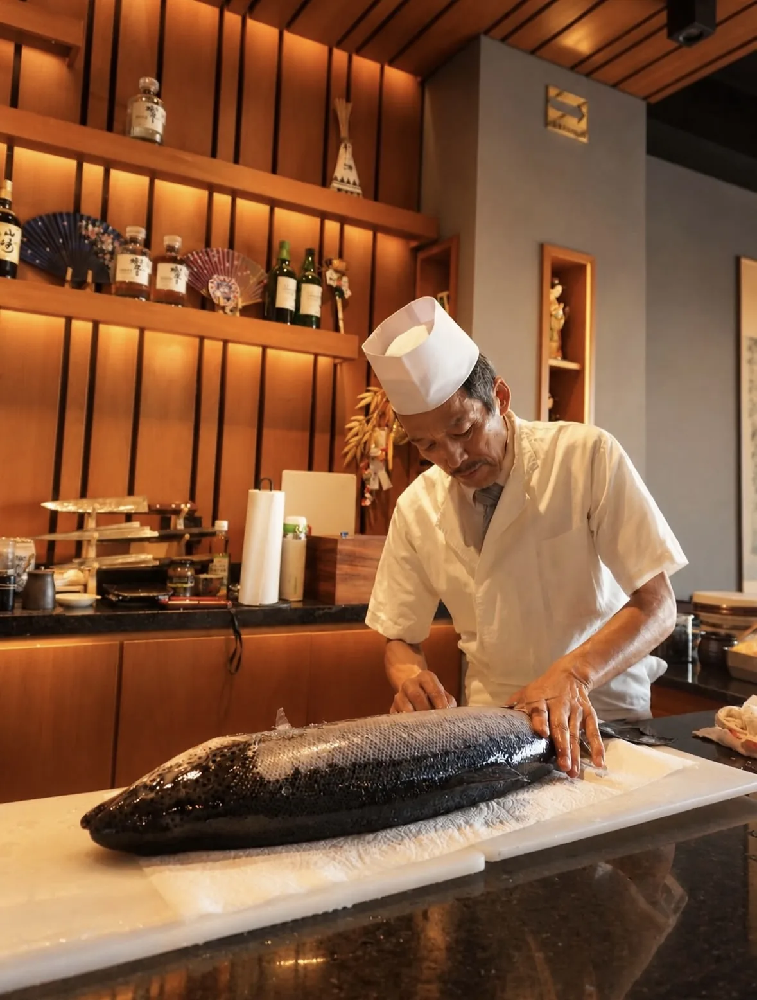
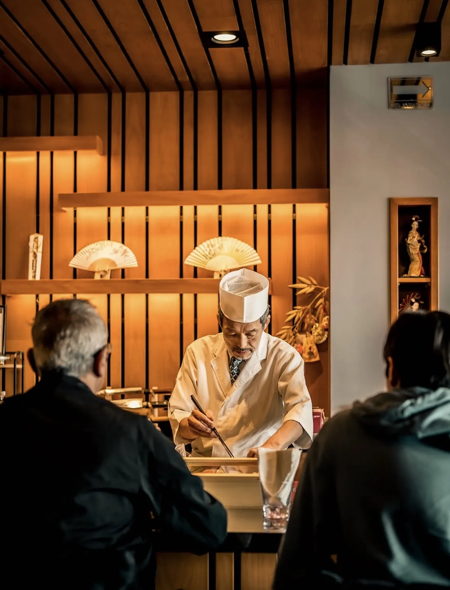

Cocina japonesa · Omakase · Plaza Kentro
Usted se sienta.
El chef decide.
SENA es una barra pequeña — cinco mesas y el mostrador — donde el pescado se corta frente a usted y cada plato llega explicado, no solo servido.
★ 4.7 · 79 reseñas en Google
御任せ
Omakase. En japonés significa “se lo dejo a usted”.

Cómo es una noche aquí
Un lugar chico,
a propósito.
- 01
Se sientan en la barra o en una de las cinco mesas — no hay más, y así se queda.
- 02
El chef elige el pescado del día y arma su plato frente a ustedes.
- 03
Cada corte llega explicado: de dónde viene, cómo se come, por qué ese y no otro.
- 04
Comen despacio. Si la mesa de al lado también espera su plato, es porque aquí nadie corre.
5Mesas + la barra
4.7★ · 79 reseñas en Google
Mar–DomLunes cerramos
Reservaciones
Asegura tu lugar
en la barra.
Llámanos y vive esta gran experiencia de auténtica comida japonesa.